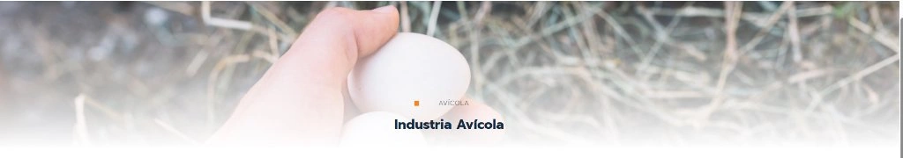

Sector AvícolaPerú Conchuela fortalece la producción en el sector avícola
Cómo el carbonato de calcio biogénico de alta asimilación (32 a 36%) optimiza la dureza de la cáscara del huevo, reduce roturas en transporte y mejora la salud de aves ponedoras.
Leer nota completa